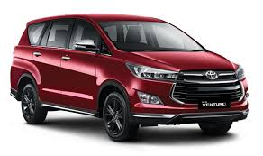
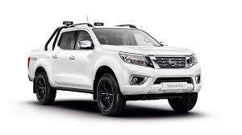

Layanan & Dukungan Mengapa Kami?
Layanan Profesional Layanan
kami sepenuhnya berorientasi pada kepuasan pelanggan. Kami bekerja dengan totalitas penuh dan profesionalisme. Siapa pun Anda, Akankah Kami selalu memberikan yang terbaik untuk Anda.
Unit Kendaraan Terjamin
Semua kendaraan kami diawasi dan dipelihara secara ketat dan teratur, membuat kendaraan kami selalu dalam kondisi terbaik sepanjang waktu. Keselamatan, kenyamanan, dan Eksklusivitas dalam kinerja adalah prioritas utama kami dalam layanan kami.
Berbagai Jenis Kendaraan
Kami menyediakan berbagai jenis kendaraan mengejar Anda dengan berbagai jenis merek kebutuhan Anda.
Driver yang berpengalaman Driver
kami yang handal, ramah dan berpengalaman selalu siap melayani Anda untuk mengambil keamanan dan kenyamanan Anda untuk semua milik Anda.
Layanan Kendaraan Pick-Up
Jika Anda membutuhkan mobil tanpa sopir, kami memiliki layanan penjemputan untuk mobil kami untuk rumah Anda.
Semua Asuransi Risiko
Kendaraan kami sudah termasuk dalam semua fasilitas Asuransi Risiko.
24 jam Customer Assistance
Ini benar-benar memungkinkan pelanggan kami jika Anda memiliki masalah dan butuh bantuan menghubungi kami, Kami akan menyelesaikan masalah atau akan ada beberapa derek dengan truk derek. (hanya di daerah karisidenan pati).
Harga Kompetitif
Kami akan menawarkan layanan terbaik kami dengan harga yang wajar dan kompetitif.
Free Maintenace
All about Machine adalah perawatan oleh kami, jadi Anda akan menghemat biaya.
Mobil Subtitute
Jika masalah dengan mobil dan mendapatkan perbaikan beberapa hanya hubungi kami, kami akan memberi Anda substitusi mobil. (berdasarkan permintaan dengan mobil lain). ** Workshop Pemeliharaan dan Perbaikan melayani dengan Workshop kami.
Tentang Mobil
|  | Innova venturer besutan Toyota ini tampak memiliki tampilan eksterior yang begitu gagah dan elegan di mana terdapat beberapa lekukan lembut yang begitu elegan pada bodi Toyota Venturer ini. Selain itu, pada sektor interiornya pun juga akan disuguhkan ruang kabin luas dan mewah lengkap dengan fitur canggih. Tak hanya itu saja, pada sektor dapur pacunya pun kabarnya akan dibekali mesin handal dengan 2 pilihan, yaitu mesin bensin 1TR-FE 2,0 liter dan diesel 2GD-FTV 2,4 liter yang keduanya bisa dipilih sesuai selera konsumen. |
|  | Navara NP300 ini adalah produk garapan Nissan yang memiliki konsep desain Autotech. Dengan desain terbaru tersebut truck pickup 4×4 ini memiliki julukan baru yakni Nissan Navara Sportversion. Sesuai dengan konsepnya bahwa mobil 4×4 ini benar-benar terlihat gagah dan maskulin pada desain eksteriornya. |
 | Nissan GT-R merupakan mobil sport terbaru yang dibuat di Jepang dan menggunakan mesin V6 Twin-Turbo, dan merupakan penerus dari jajaran Nissan Skyline GT-R,menggunakan mesin VR38DETT, 3;799 cc DOHC V6.Dua turbocharger paralel menambah induksi tenaga.GT-R menghasilkan tenaga 485 PS (357 kW; 478 hp) pada 6400 rpm.Berat kosong 1;730 kg (3;810 lb) atau 1;736 kg (3;827 lb) dengan kantong udara samping dapat tercapai berkat penggunaan sasis baja dan aluminium untuk kap mesin, bagasi, dan pintu.Transmisi dual clutch semi otomatis 6 percepatan |
 | Honda Civic generarasi ke-10 ini diluncurkan pertama kali di Indonesia pada tahun 2016 dengan gebrakan baru pada sektor mesin dan desain. Mobil ini adalah yang pertama dari keluarga civic yang dibekali dengan mesin turbo. Mobil yang sempat heboh pada awal peluncurannya ini, juga mengalami perombakan pada bagian desain yang kini menyerupai mobil sport yang agresif dan modern. Meskipun dibanderol dengan harga yang tinggi, mobil ini tetap menjadi pusat perhatian. Berkat mesin dan desain baru, mobil ini terlihat selangkah lebih maju dari para kompetitornya. |